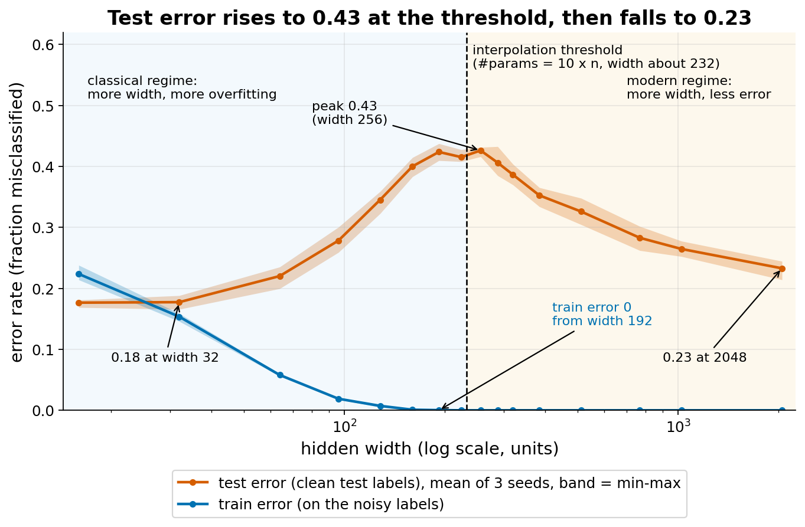
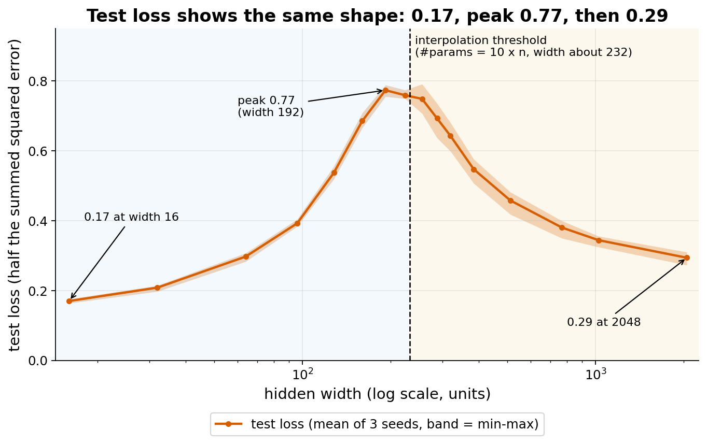
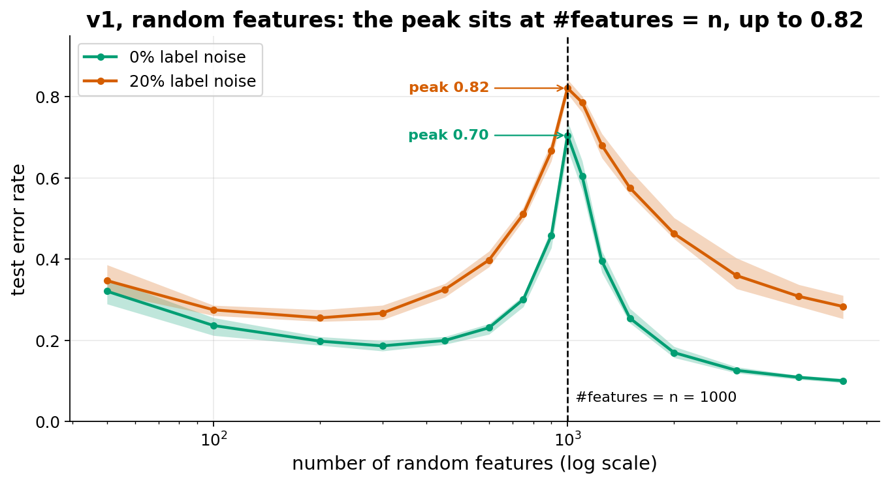

Double descent
Extends the generalization themes (Lab 2), next to Class ensemble and regularization.
The idea
The classical picture (Goodfellow ch. 5, capacity and generalization) is a U-shaped test-error curve. A model that is too small underfits: it has high bias. A model that is too large overfits: it has high variance. Training error keeps falling as capacity grows, test error falls and then rises, and the best model sits at the bottom of the U.
Look at what happens when capacity keeps growing past the interpolation threshold. This is the model size at which the training error first reaches exactly 0, so the model fits every training point, noise included. For a net with 10 outputs and n training points, a rough rule is that the threshold is near (number of parameters) = 10 x n. At that size there is almost only one way to fit the data, and that way is forced to bend wildly through every noisy point. Test error is at its worst there.
Past the threshold, many different functions fit the training data exactly. Training then (through the optimizer and its starting point) picks one of them, and it tends to be a smoother one. So test error falls again. For linear and random-feature models this is proven: the solution picked is the one with the smallest norm, and its norm shrinks as the model grows past the threshold. For neural nets it is the usual explanation, not a proof. The result is a second descent after the peak. This is the "modern regime" of large models; the part before the peak is the "classical regime".
Why label noise makes the peak bigger. At the threshold the model must reproduce the wrong labels exactly with the little freedom it has, so the noise goes straight into the predictions. With more noise there is more to reproduce. In our data (see the table below) the test error peak grows with noise.
Model-wise vs epoch-wise. Model-wise double descent is what we run: vary the model size, train to convergence, plot test error. Epoch-wise double descent keeps the model fixed and varies training time: test error can fall, rise, then fall again as training goes on. We do not test the epoch-wise version.
Established vs debated. Established: the peak appears in many settings (linear and random-feature models, neural nets), its location moves with the number of training points, and label noise makes it higher. Debated or open: how general it is for deep nets in practice, how much of it depends on the loss, input preprocessing and optimizer, and the best theoretical explanation. Our own prototype is evidence of this: the peak vanished or was weak in the first version when we changed these choices.
Connection to the course: it refines the capacity story of ch. 5. "Bigger than needed means worse" is true only up to the threshold. It also relates to ch. 7 (regularization): we deliberately use no regularization and no early stopping here. The literature reports that well-tuned weight decay (Nakkiran et al. 2020, proven for some linear regression models and shown empirically for more general models, including neural nets) and early stopping (Nakkiran et al. 2019) can shrink or remove the peak. We did not test this; students can discuss it.
References:
- Belkin, Hsu, Ma, Mandal (2019), Reconciling modern machine learning practice and the bias-variance trade-off.
- Nakkiran, Kaplun, Bansal, Yang, Barak, Sutskever (2019), Deep Double Descent: Where Bigger Models and More Data Hurt.
- Nakkiran, Venkat, Kakade, Ma (2020), Optimal Regularization Can Mitigate Double Descent.
What students would do
- Load MNIST, take 1000 training images, replace 20% of their labels by random labels, reduce inputs to 32 numbers with PCA (fitted on the training images only).
- Train a one-hidden-layer ReLU network of a given width: full-batch Adam, learning rate 1e-3, 4000 steps, squared-error loss on one-hot targets. Nothing else changes between widths.
- Measure train error (on the noisy labels), test error and test loss on the clean test set.
- The only knob a student changes is the hidden width (and the seed). Learning rate and steps must stay fixed.
Class grid: 16 widths (16, 32, 64, 96, 128, 160, 192, 224, 256, 288, 320, 384, 512, 768, 1024, 2048) x 3 seeds = 48 cells. Each student runs a few cells and reports the numbers. The class plot shows test error (and train error) against width on a log axis, one dot per cell; the peak appears as the dots fill in.
Discussion questions:
- Why does train error reach 0 at width 192, and what does the test error do there?
- Would you pick the width with the best test error from this plot? Is that cheating?
- What would change with no label noise, or with 40% noise? (Prototype data below.)
- Where does early stopping or weight decay (ch. 7) fit in?
What our prototype found
Setup: MNIST, first 1000 images of a fixed shuffle, full 10k test set, 20% label noise on training labels only, PCA to 32 whitened dimensions, one hidden layer, parameters = 43 x width + 10, so the threshold 10 x n = 10000 parameters is at width about 232. 16 widths x 3 seeds.



| Width | Parameters | Train error | Test error | Test loss |
|---|---|---|---|---|
| 16 | 698 | 0.22 | 0.18 | 0.17 |
| 32 | 1386 | 0.15 | 0.18 | 0.21 |
| 128 | 5514 | 0.01 | 0.35 | 0.54 |
| 192 | 8266 | 0.00 | 0.42 | 0.77 |
| 256 | 11018 | 0.00 | 0.43 | 0.75 |
| 512 | 22026 | 0.00 | 0.33 | 0.46 |
| 1024 | 44042 | 0.00 | 0.27 | 0.34 |
| 2048 | 88074 | 0.00 | 0.23 | 0.29 |
Means over 3 seeds. Medians are 0.43 at 256 and 0.24 at 2048; they differ from the means by at most 0.01.
Effect of the noise level (test error low / peak / width 2048): 0% noise .10 / .14 / .08 (weak peak); 10% noise .14 / .30 / .15; 20% noise .18 / .43 / .24; 40% noise .26 / .61 / .42. More noise gives a higher peak, but at 40% the right side stays high.
Why the first attempt was marginal and what changed
In the first attempt the network took all 784 pixels as input, so each hidden unit adds about 795 parameters and the interpolation threshold falls at a small width: at n = 4000 (cross-entropy loss, 5000 steps) train error first reaches about 0 near width 28 to 32. To the left of it there is almost no room for a good small model: width 6 is badly underfit (test error 0.45), width 8 gives 0.31, and the rise to the peak (0.37 to 0.39 at widths 20 to 28) is small and noisy. The curve then falls to 0.23 at width 256 (medians of 3 seeds). At n = 2000 with 3000 steps the curve was monotone (no double descent). The final setup changed three things: PCA to 32 inputs (this moves the threshold to width about 232, leaving room for a good underparameterized regime), squared-error loss, and 1000 training points. Ablations: cross-entropy gave a peak at a different width and a less clean curve; raw 784-pixel inputs failed (optimization collapsed, train error stayed high); freezing the first layer moved the peak to about width 1000 and the curve did not return to the valley.